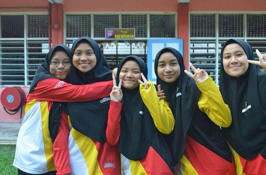
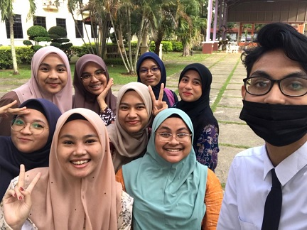

MY FRIENDS ✨

In this page, let me share with you about my bestfriends and I really loves them so much. When I was young, I used to moved out everywhere because follow my father's occupation. So, when I got to transferred to a new school, I am really afraid if I didn't get new friends. But, turn out everyone want to be my friends and I am so grateful for that. As I have many friends from Johor, Kedah and Negeri Sembilan, I only have these 4 person that really close to me and we are still in contact until now eventhough all 5 of us are busy with our own life and study. As in the picture above, there are my bestfriends and that picture was taken during our SPM year when we were 17 years old at TJTI. They were my classmate, my dormmate and my lifemate. From the left in the picture, it was me and follow by Nabihah, Aida Aqilah, Ammarsya and Amirah Hasanah. How can we being that close? It is because we have the same brain and attitude. We knew each other when we were 16 years old and Alhamdulillah until today, we are still in contact even rarely to do so because we are so busy. It's been 6 years including this year of our friendship. We were always been there for each other whenever we need them throughout our life and always cheer up for each of us. I am so grateful for meeting them and I hope we will still stick together until future.
Next, when I further my studied in diploma at UiTM Campus Rembau, Negeri Sembilan, the classmate that I got also understand each other and always helps each other when we were having any problem like "I got your back and you got mine". My class at that time have 24 people only and we managed to finished our diploma together. Now, for degree, almost half in my class are further study in degree but some of us didn't continue study in degree because they love to find money first by working. When I was in diploma year eventhough we must faced Covid-19 and need to study at home, we still remind each other about class schedule and so on. They were a very great friends to me and I hope we will still in contact until adult and grow older together.

In my degree life, I have knew more friends including my classmate. As being stated in the picture above, my classmate in this degree only have 9 people. It is my first time in my life for having this small community of classmate. In my class there are 3 person who are from UiTM Campus Machang, Kelantan, 1 person from UiTM Campus Rembau, Negeri Sembilan which is me and the rest are from UiTM Campus Merbok, Kedah. We got to learn new dialect of Kelantan and so are they. I hope that we can get along with each other and manage to finish this degree together in August 2024.